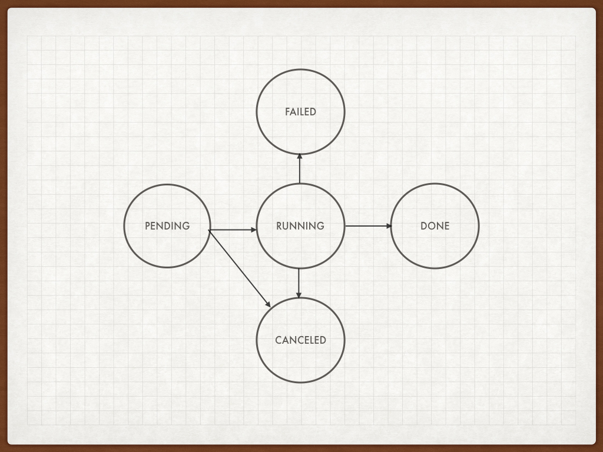
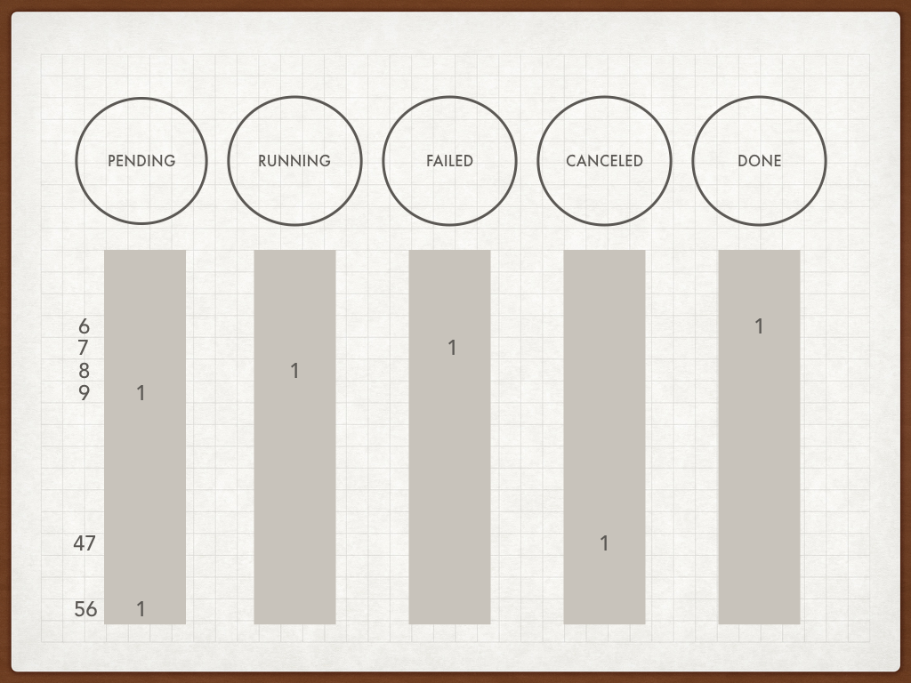
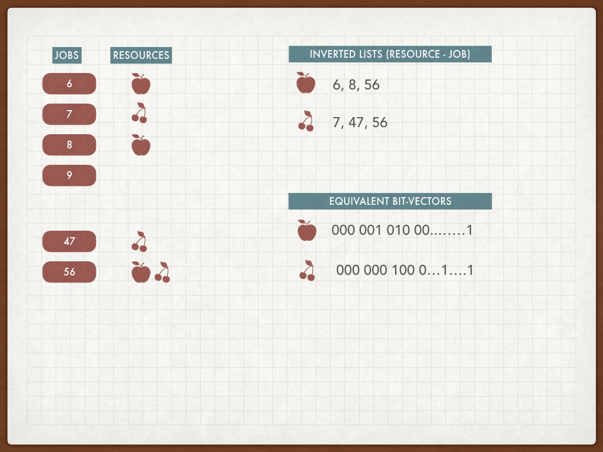
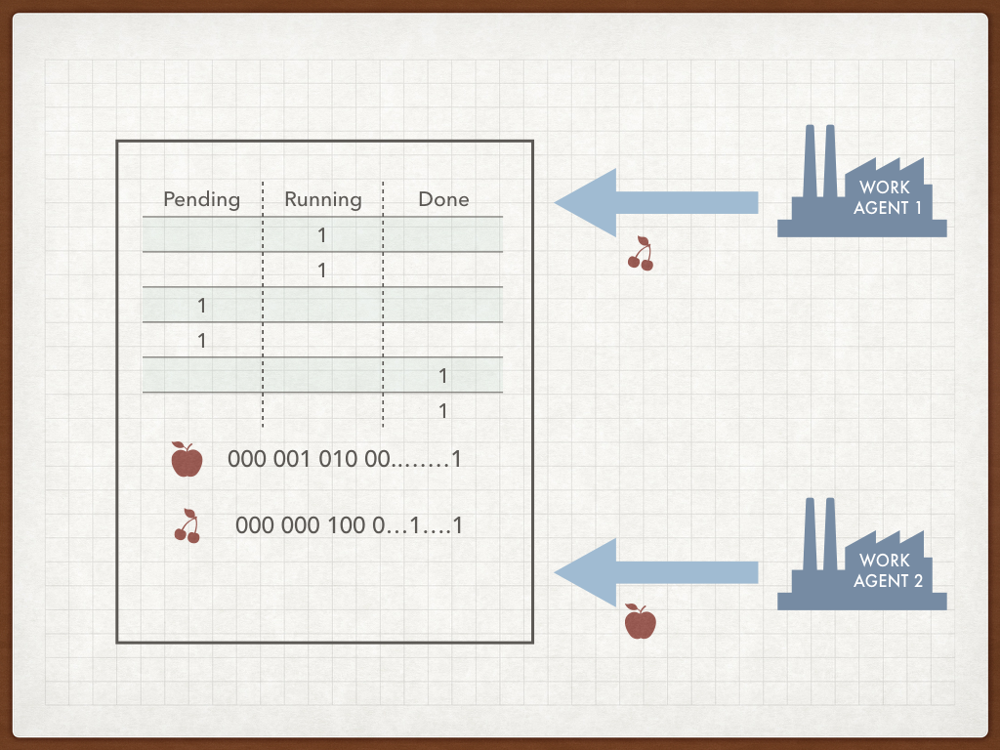
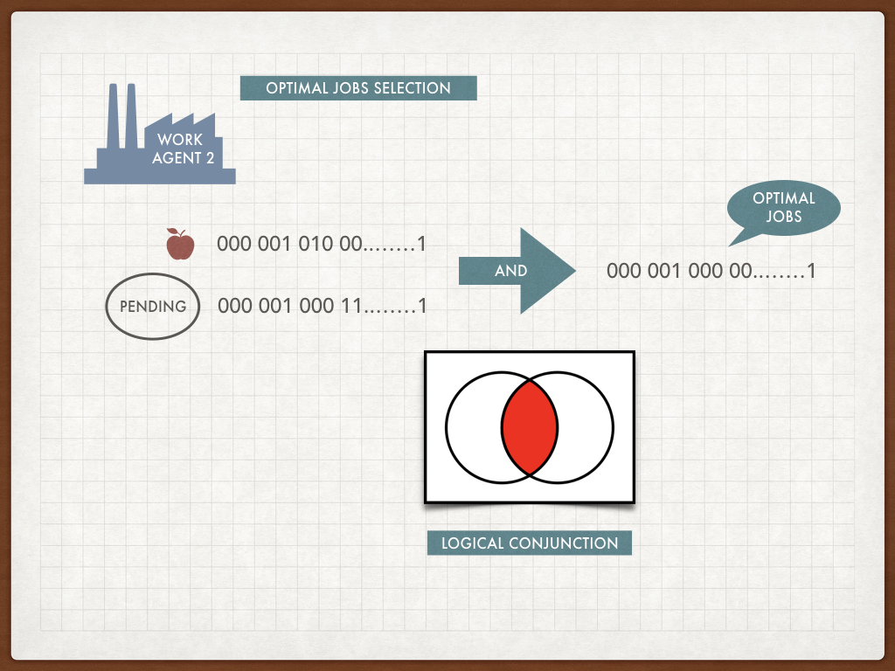

Job Queue Scheduling with Bit Vector Indexes
Anatoliy Kuznetsov. Michael Kholodov. Oct 2017.
Introduction
Enterprise and web scale systems may process hundreds of millions of jobs per day. These jobs may be coming from internal data processing pipelines or generated live by users visiting a complex interactive web site, where every page hit results in a cascade of calls to back-end RESTful services.
Such a system requires a near real-time coordination between thousands of active job submitters and hundreds of job processing work agents.
The generated workloads have probabilistic non-random characteristics. They are characterized by geographical locality, database similarities, access to similar resources or similar computations.
In the past system designers used the concept of a session and the session affinity, but it did not work that well, because in the large-scale stateless systems the session locality was often insufficient. Therefore the workload similarity is the concept we will try here to explore.
Finite State Machine of Job Execution
Job execution logic is very often described in terms of Automata Theory. Here we present a very simple example of FSM for job execution. Our FSM uses 5 states: Pending, Running, Canceled, Failed, Done, to describe the minimal life cycle of the processing job or task.
Job scheduling automata
When it comes to the implementation, it is very easy to implement state change logic using one single byte of memory or a field in the database.
If we have millions and millions of jobs to run we can come up with a potentially better scheme for storing the FSMs: the bit vectors.
FSM collection as a set of bit-vectors
First let’s assume, that each job in our system has a unique integer number, assigned from a simple incremental counter. Needless to say, that each job comes with a set of input arguments, attached data, inherited attributes, etc.
As the first design proposal, we suggest splitting FSM storage and job attributes. Our FSM storage would be designed as a collection of bit vectors, each representing a state in the FSM (Pending, Running, etc.). In the case above there would be five bit vectors.
FSM as bit vectors
In the picture, we see jobs [6, 7, 8, 9, … 47, 56].
The proposed FSM layout has its own advantages and challenges.
We can see that storing FSM states separately takes less memory, 5 bits vs 8 bits in the traditional scheme. This advantage is not big and it is only tactical. If we add more states (real life FSM graphs can be far more complex) we see how this advantage may turn into disadvantage since 8 bits can hold 255 states, and in our scheme, we do not use all the bit combinations.
Our advantage here is that the states in the FSM matrix are not distributed stochastically, they have a particular distribution and access patterns, traveling from Pending to Done. Such non-random bit patterns are compressed well by BitMagic Delta-GAP compression algorithms. This compression naturally allows random access to the FSM states and saves memory. The general-purpose memory compression like ZIP based block compression scheme would not allow it.
Our advantage here is the compression, combined with cache coherent data access and ability to randomly access everything to assess the big picture.
Why is perceived memory saving so important? Don’t we have tons (hundreds of gigabytes) of cheap memory?
Yes and no. Currently the cloud technology allows to deploy to machines with lots of memory, but there are buts. VM deployment via containers like Docker may limit the available memory, and burning RAM may not be an option. FSM machine may need to coexist with other services, or have other technical or business restrictions. Resources needs to be controlled. More importantly, memory while physically available needs to be pushed through the CPU and that is where inefficient memory layout often becomes a bottleneck. Frequently accessed data needs to be separated from the data that is needed less often. Developers of CPU cache-friendly algorithms know that.
It is all about algorithms.
But what kind of tasks we are trying to solve here?
Coming to that.
FSM storage workload analysis
The number of reads is usually higher than the number of status updates. Agents submitting jobs are interested mostly in the job status, which boils down to read-only check of Done and Failed vectors. We make an important assumption, that the job state change event is relatively rare, comparing to the job status inquiry.
This assumption makes it possible to use relatively simple and efficient reader-writer locks to protect FSM in the multi-threaded access to allow multiple concurrent status inquiries. We have to admit however, that the correct MT synchronization of the FSM vectors can be the subject for a separate article but we leave it out of the scope here.
Optimal job scheduling
Real life dynamic job workloads are very often have characteristics of locality. It can be geographical locality (like proximity to a specific data-center) or it can be data-resource locality (database shard preference) or local cache locality. In the stateless services cache locality is often a design alternative to a full back-end state.
To ensure resource locality in the job stream we need to use an optimal job scheduling. Simple fair scheduling algorithms like FIFO or round robin do not guarantee the stream of jobs evenly spread between work agents, associated with certain resources. Optimal scheduling strategy requires queue re-ordering, in the special literature this is called “Priority queues”. Priorities can be very different, for example “easy/fast job first”. For our purposes, we would pick resource allocation as a criterion to illustrate our case.
Job resources as bit vectors
Let’s explain the idea of the resource association and resource based indexing.
In the picture above the jobs are marked with the resource requirements, 6 needs an Apple, 7 – cherry, 56 – both Apple and Cherry. We build a so called “inverted list” where apple is needed for jobs [6, 8, 56, ...]. As we know, an inverted list has the equivalent representation of a bit vector, where bits are set for positions 6, 8, 56, etc. When a new job is registered in our system, its ID is assigned and resource list is known. Just set the right bit in the resource vector – that’s it.
FSM stoarge plus resource bit vectors
When work agents come to the queue (pull method) or receive jobs as a queue-side push they declare resources they’ve got. Work Agent 1 has the cherry, Work Agent 2 got the apple. Queue holds the FSM vectors and the resource indexes. Now there is a decision to make, who gets what.
Optimal job selection with bit vectors
It turns out that the problem of the job selection can be solved in the context of set algebra with logical AND (Conjunction) of our Pending bit vector with the resource vector(s). Such operation would be quick and efficient. The result vector can be traversed and turned into the job ids again.
If the operation returns an empty vector we have a bit of a problem (pun intended). We can wait for an optimal job to come or retrieve a sub-optimal job (basically the first one from the Pending vector). The optimal choice in queue systems of mass service requires estimation of probabilities of the optimal worker arrival versus costs of scheduling of sub-optimal jobs (costs of resources). Optimal solution of this problem is possible, but dives into more serious math in the area of probabilities and dynamic programming. For the purposes of this use case we do not intend to go in that direction. For the practical purposes let’s assume, that the greedy method of sending the first available job is good enough. In this case the Work Agent gets associated with the new resource (here we assume that the resource will be universally available for all worker agents albeit the higher cost).
DevOps and Monitoring
Use of queuing systems makes monitoring tasks easy. It essentially boils down to real-time control of the FSM status vectors. Typical monitoring system monitors logs and errors in the logs. In the best high-performance log processing systems, we can expect the outage signal to appear in a few minutes.
Direct, in-core monitoring of FSM vectors allows to detect important events in a split-second, similar to high-frequency trading systems.
For example, explosive population growth of the FAILED vector means progressing outage in the specified queue. While the exact source of such an outage cannot be established by examination of the bit vector status, this early signal could alert automatic systems to run perimeter check algorithms. The root cause could be a failed hardware or unavailable network mount or deployment of a failing component or something else.
Another monitoring watch point is the PENDING vector. Sharp and prolonged growth often means that the production-consumption becomes unbalanced and the elastic capacity reservation needs to be triggered, adding more resources. The down-scaling decision can be made by analysis of number of jobs entering PENDING state and number of jobs leaving it per time unit. Decisions for the elasticity change can be quite important for the optimization of operational cost of the data-center, especially in the world of leased computational capacities.
Summary
In this post we reviewed a use case design for high throuput bit vector accelerated job scheduler, efficiently solving problems of prioritization, affinities and work agent to resource associations.
References
- Operations Research: An Introduction (10th Edition). by Hamdy A. Taha. ISBN-13: 978-0134444017